Identity exploration · October 2026
The cap mark in twenty-six versions, thirty new concepts, the thinking behind each one, and the rules that hold them together.
For discussion
The brief
Keep the idea you brought, a cap seen from above, and draw it with real precision.
From a 16-pixel browser tab to an LED wall, embroidered on a cap and printed in one colour.
Every version has a reason, a rule and a place it belongs. Nothing random.
The seven services it stands for
Event Management
Conferences & PCO
MICE
Corporate
Experiential Installations
Branding & Design
Websites, Apps & Software
PurpleHat Events · Identity exploration · 02
Your concept
Three crown panels. The fabric pieces of the cap, all one shape.
The visor. The stiff front piece over the face. It faces right, the way we read: the cap looks forward.
Four seams. Where the pieces are stitched together.
The centre. The top of the cap, where every seam points.
Read as a symbol: a team of pieces made into one thing, with one piece out front leading.
PurpleHat Events · Identity exploration · 03
The journey
| Route | What we saw | What we kept |
|---|---|---|
| Particle stage | An impressive effect, but nothing about it was PurpleHat | Motion must grow out of the mark |
| Seven lenses | One panel per service made a flower, and the centre grew too big | Seven is a story, not a shape |
| Seven straight wedges | Read as a wheel or a pie chart, not a cap | Panels stay lenses with curved edges |
| 3D dome with a visor | Clearly a hat, but an illustration rather than a mark | Stay flat and abstract |
| Split panels, seven seams | Busy; the panels lost their calm | Four seams, nothing added |
| Four panels, centre closed | The calm of the original, with fuller panels | The master: 02 Core |
PurpleHat Events · Identity exploration · 04
The rules
Every panel is the same shape, turned exactly 90°.
One arc of the outer circle, one inner arc. No straight edges.
All four seams stay equal, whatever else changes.
Always on the right, the direction of reading. Never rotated.
Only the visor changes colour. The crown is always one tone.
Each of the 26 versions that follow either keeps all five rules, or breaks one on purpose for a single, named job.
PurpleHat Events · Identity exploration · 05
Construction
| Part | Value |
|---|---|
| Outer circle | R 100 |
| Inner arcs, ×4 | r 85, 125 out |
| Centre opening | 80 |
| Panel depth | 60 |
| Panel tips | 42.6° each side |
| Seam width | 6.8, constant |
| Symmetry | 4 × 90° |
Anyone can redraw the mark in Illustrator or Figma from this table.
PurpleHat Events · Identity exploration · 06
02 · Core
Your concept, with the centre closed from 86 to 80 and the seams held at their original width.
Every other version in this deck starts here.
Family A · Geometry · 01–06
Same idea, six settings. Small moves in the centre, the seams and the button change its weight and feel.
Your concept, rebuilt with true arcs. Centre 86.
Centre 80, seams held at 6.8. The master.
Centre 74. Heavier; more emblem than air.
The cap's top button, where the seams point.
Seams 4.2 for big sizes: stage, signage, print.
Seams 11, so the cut survives at 16 px.
PurpleHat Events · Identity exploration · 08
Family B · Craft · 07–09
Versions for physical production: light, thread and print.
One continuous line per panel. Bends straight into neon tube; also foil and blind emboss.
A running stitch 12 units in from the rim. For caps, tote bags and staff uniforms.
The construction lines left visible. For pitch decks, proposals and the website's about page.
PurpleHat Events · Identity exploration · 09
Family C · Meaning · 10–13
The visor is the one piece that leads. A small move gives the whole mark a gesture.
Visor turned 11°: a greeting. For invitations and welcome screens.
Visor moved out 12 units: momentum. For launches and announcements.
Crown recedes, visor lit: Event Management leads the other services.
Each panel turned 9°: a room coming together. The animation's key frame.
PurpleHat Events · Identity exploration · 10
Family D · Colour · 14–16
The shape carries the idea, so it survives losing its colours.
Ink on white. Embroidery, rubber stamps, newspapers, single-colour print.
White on ink. Dark stages, night events, merchandise on black.
Three crown tints, visor in white. Breaks the one-tone rule, for large walls only.
PurpleHat Events · Identity exploration · 11
Family E · Lockups · 17–19
The mark stays untouched; the name sits beside it or below it. PHE is the short form.
PurpleHat
EVENTS
The default. Website header, email signature, documents, invoices.
PurpleHat
EVENTS
For square spaces. Posters, stage backdrops, Instagram posts.
PURPLEHAT EVENTS
Custom-drawn P, H and E with the mark's weight. Short form for merch and social.
PurpleHat Events · Identity exploration · 12
Family E · Monograms · 20–22
Three ways to put the letters into the cap itself. Each one is for large sizes only.
Letters held in the centre opening. Badges, wristbands, lanyards.
Back to front across the cap: P in the back panel, H in the centre, E in the visor.
Back panel and visor joined across the centre: H for Hat. A detail for those who look.
PurpleHat Events · Identity exploration · 13
Family F · System · 23–26
Containers, the smallest size, and the mark used as a material.
Mark at 72% on a rounded square. Apps, WhatsApp Business, Google profile.
The bold-seam master at 48, 32 and 16 px. Browser tabs and bookmarks.
A half-drop repeat in two purples. Wristbands, backdrops, gift wrap.
The mark cropped huge off the edge. LED walls, stage screens, social covers.
PurpleHat Events · Identity exploration · 14
All versions
01 Original
02 Core
03 Fuller
04 Button
05 Fine
06 Bold
07 Neon
08 Stitch
09 Blueprint
10 Tip
11 Forward
12 Lead
13 Motion
14 Mono
15 Reverse
16 Tonal
PurpleHat
17 Lockup
PurpleHat
18 Stacked
19 PHE
20 Seal
21 P·H·E
22 Hidden H
23 App icon
24 Favicon
25 Pattern
26 Crop
PurpleHat Events · Identity exploration · 15
New directions
Alternatives to the cap mark, held to the standard of a corporate identity: real typefaces, pure geometry and no illustration.
W01–W10
The name is the logo. Ten typefaces, each with one considered detail.
L01–L10
P, H and E as compact marks for icons, profiles and stamps.
S01–S10
A simple shape beside the name, drawn from the hat or the event.
Rules for all thirty: no illustration · real typefaces only · at most three shapes · one accent colour.
PurpleHat Events · Identity exploration · 16
Wordmarks · W01–W05
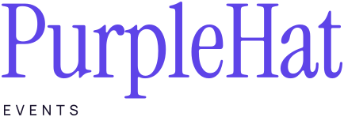
Instrument Serif, set tight.
Hat in italic: one quiet gesture.
Manrope, lowercase, close-set.
Two weights, one name.
Inter Tight, stacked, tight leading.
Most established firms lead with their name. It is clear, timeless and never needs explaining.
Rule: one typeface, one detail.
PurpleHat Events · Identity exploration · 17
Wordmarks · W06–W10
Spaced capitals with a hairline.
Wide and calm, for screens and stages.
Bricolage: confident, with character.
Syne capitals: an arts voice.
Cormorant with an italic Events.
Hospitality, technology, culture or luxury: the typeface sets the tone before anyone reads a word.
Rule: EVENTS always secondary.
PurpleHat Events · Identity exploration · 18
Lettermarks · L01–L05
One stem; the bowl closes on the bar.
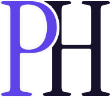
P over H, with a fine gap.
A bold P cut from a solid disc.
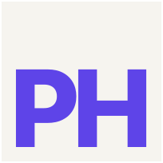
PH set into a square, Swiss style.
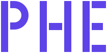
Stencil gaps recall the cap's seams.
A compact sign for app icons, social profiles, stamps and embroidery, paired with a wordmark.
Rule: no ornament, ever.
PurpleHat Events · Identity exploration · 19
Lettermarks · L06–L10
A stem and a half circle.
Personal, like a signature.
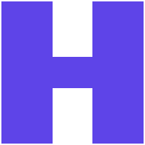
Two notches make a square an H.
PHE in a fine double ring.
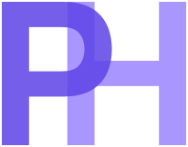
Overlapping P and H.
Each lettermark is paired with one of the wordmarks: serif with serif, geometric with geometric.
Rule: one weight per mark.
PurpleHat Events · Identity exploration · 20
Symbols · S01–S05
A dome over a line: hat, sunrise, venue.
The cap reduced to its four seams.
One panel of the cap, alone.
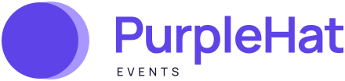
A lavender crescent at the front.
A beam and its pool of light.
A symbol can stand alone on stage screens and merch once people know it. Each is shown with a Manrope wordmark.
Rule: three shapes at most.
PurpleHat Events · Identity exploration · 21
Symbols · S06–S10
Rings of seats around a stage.
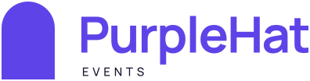
A doorway: the way in.
One line traces a top hat.
A top hat in two rectangles.
Each event is its own world.
Every symbol is geometry, not a drawing: it stays crisp from a favicon to a stage backdrop.
Rule: one accent shape only.
PurpleHat Events · Identity exploration · 22
All thirty directions
W01 Editorial
W02 Italic
W03 Lowercase
W04 Two weights
W05 Stacked
W06 Hospitality
W07 Extended
W08 Grotesk
W09 Gallery
W10 Classic
L01 PH
L02 Monogram
L03 Disc
L04 Block
L05 Stencil
L06 Geometric
L07 Italic
L08 Square H
L09 Seal
L10 Overlay
S01 Bowler
S02 Seams
S03 Lens
S04 Eclipse
S05 Spotlight
S06 Arena
S07 Arch
S08 Contour
S09 Silhouette
S10 Orbit
PurpleHat Events · Identity exploration · 23
Colour
#5E44E8
The ground. Backgrounds, and the crown on white.
#F6F4EF
The three crown panels. A warm white, never pure white.
#D7CFFF
The visor only. The single accent in the mark.
#17112B
Text, the one-colour mark, and dark stages.
Contrast: crown on purple 5.5:1 · visor on purple 4.1:1 · crown on ink 16.5:1. Print values (CMYK, Pantone) to be matched on a proof.
PurpleHat Events · Identity exploration · 24
Typography
PurpleHat
DISPLAY · URBANIST
Round bowls that echo the mark. Headlines and the base for a custom wordmark.
TEXT · NUNITO SANS
Warm and easy to read. Proposals, websites, captions.
LABELS · IBM PLEX MONO
Times, dates, halls: 8 PM · HALL 2 · 12.10.26
PurpleHat Events · Identity exploration · 25
Space and size
Clear space on every side equals one panel depth: 30% of the mark's width, shown by the lavender bars.
| Version | Smallest size |
|---|---|
| 02 Core | 24 px · 8 mm |
| 06 Bold seam | 16 px · 5 mm |
| 17 Horizontal lockup | 120 px · 30 mm wide |
| 08 Stitch | 40 mm across |
| 20–22 Monograms | 48 px · 15 mm |
Print and embroidery sizes are starting points; confirm them on a test with your printer and embroiderer.
PurpleHat Events · Identity exploration · 26
Misuse
The visor always faces right.
One crown tone, one visor accent.
Scale it evenly, always.
Keep strong contrast with the ground.
All solid or all line, never both.
Four seams, always.
PurpleHat Events · Identity exploration · 27
In use
08 Stitch on top of a purple cap: the logo, worn the way it was drawn.
PurpleHat Events
@[your handle]
The round mark fills a circle crop with nothing cut off.
26 Super-graphic: the visor glows at the edge of the screen.
PurpleHat
EVENTS
17 Horizontal lockup in purple on the warm white.
PurpleHat Events · Identity exploration · 28
Our recommendation
The master. Wherever the mark stands alone.
Below 32 px: favicons, app badges, tiny icons.
PurpleHat
EVENTS
Whenever the name needs to appear.
Caps, uniforms and merch.
Plus 13 In motion as the first frame of a three-second logo animation, where the panels settle into place.
PurpleHat Events · Identity exploration · 29
For this meeting
| Decision | Options | Our view |
|---|---|---|
| Direction | Cap mark · one of 30 directions | Develop 02 Core and the shortlist side by side |
| Centre size | 86 · 80 · 74 | 80, the 02 Core |
| Top button | Without · with | Without; the button on merch only |
| PHE | Lockup · inside the mark · none | 19 PHE lockup as the short form |
| Wordmark | Urbanist as set · custom-drawn | Custom-drawn, based on Urbanist |
| Purple | Keep #5E44E8 · adjust | Keep; confirm on screen and on a print proof |
| Gesture | Tip · Forward · Lead · Motion | Motion, for the logo animation |
After this meeting: the custom wordmark, the final colour check, an export pack (SVG, PNG, PDF) and the logo animation.
PurpleHat Events · Identity exploration · 30